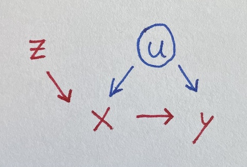

A simple Instrumental Variable
Friday April 30, 2021
Instrumental variables can let you estimate effects despite confounding, which is pretty neat. The idea is sort of that the instrument helps identify a non-confounded version of a variable, as illustrated in the over-simplified version of two-stage least squares below.
We seek to estimate the impact of x on y, where they’re both influenced by u.

Unfortunately, u is unobserved, so we can’t control for it. But lo, there is z influencing x. Let’s simulate data where all the true coefficients are one.
u = rnorm(100)
z = rnorm(100)
x = u + z + rnorm(100)
y = u + x + rnorm(100)Regressing naively, we get an incorrect estimate for the effect of x on y.
summary(lm(y ~ x))
## Estimate Std. Error t value Pr(>|t|)
## x 1.35260 0.07697 17.573 <2e-16 ***Luckily, z is an “instrument,” satisfying three requirements (following McElreath):
- z is independent of u
- z is not independent of x
- z doesn’t influence y except through x
But how do we use the instrument? Throwing it in the regression makes things worse:
summary(lm(y ~ x + z))
## Estimate Std. Error t value Pr(>|t|)
## x 1.52949 0.09207 16.612 < 2e-16 ***
## z -0.54659 0.17099 -3.197 0.00188 **A fancier model-fitting approach is needed. McElreath points out that two-stage least squares is not the only way to do this, and also that there should be some adjustments to make the standard errors make sense. I’m going to ignore adjustments and just try to get some intuition from how two-stage least squares works.
Stage one: Do a regression using z to predict x. Then get the predictions for x from that model, which I’ll call x_from_z. This uses the independence of z from u to make a “version of” (maybe a component of) x that is independent of u: the variation of x due to z.
Stage two: Do a regression using x_from_z to predict y.
x_from_z = predict(lm(x ~ z))
summary(lm(y ~ x_from_z))
## Estimate Std. Error t value Pr(>|t|)
## x_from_z 1.03978 0.23886 4.353 3.3e-05 ***We’ve recovered a fair estimate of the true parameter for x, despite not using the unobserved confound u!
Here’s the same thing as above but with the ivreg package,
correcting the standard error:
summary(ivreg(y ~ x | z))
## Estimate Std. Error t value Pr(>|t|)
## x 1.03978 0.13844 7.511 2.77e-11 ***You could also use HMC as in McElreath §14.3.
Simpler cases
This example of an instrumental variable situation extends the earlier collection of four simpler regression situations, What should be in your regression?
More complicated cases
The dagitty tools seems to be a great way to analyze a given situation (expressed as a DAG) and figure out what you should control for and/or whether there are instruments you can use to estimate a given effect.
There’s also the front-door criterion, which I’m not yet sure how to fit a model for. Maybe I’ll try to write something up eventually.
Maybe regression discontinuity is another kind of case?